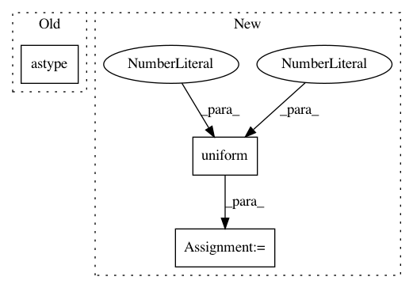

bacd93737cd63615af7bc51eeb3d3eb8424b5fd4,tests/chainerx_tests/unit_tests/routines_tests/test_linalg.py,TestSolve,generate_inputs,#TestSolve#,144
Before Change
class TestSolve(NumpyLinalgOpTest):
def generate_inputs(self):
a = numpy.random.random(self.shape).astype(self.dtypes[0])
b = numpy.random.random(
(self.shape[0], *self.b_columns)).astype(self.dtypes[1])
return a, b
After Change
class TestSolve(NumpyLinalgOpTest):
def generate_inputs(self):
sv = numpy.random.uniform(1, 2, size=self.shape[0])
a = chainer.testing.generate_matrix(
self.shape, dtype=self.dtypes[0], singular_values=sv)
b = numpy.random.random(
(self.shape[0], *self.b_columns)).astype(self.dtypes[1])
In pattern: SUPERPATTERN
Frequency: 3
Non-data size: 3
Instances
Project Name: chainer/chainer
Commit Name: bacd93737cd63615af7bc51eeb3d3eb8424b5fd4
Time: 2019-10-01
Author: beam.web@gmail.com
File Name: tests/chainerx_tests/unit_tests/routines_tests/test_linalg.py
Class Name: TestSolve
Method Name: generate_inputs
Project Name: chainer/chainer
Commit Name: fca45b1d21c7cb876aff40773699b1ce6b0bd06e
Time: 2019-09-19
Author: imanishi@preferred.jp
File Name: tests/chainerx_tests/unit_tests/routines_tests/test_linalg.py
Class Name: TestQR
Method Name: generate_inputs
Project Name: soft-matter/trackpy
Commit Name: a8c76d8e52bf1b990abdbf73da1394c3e0b1d2f4
Time: 2021-03-31
Author: rbnvrw@users.noreply.github.com
File Name: trackpy/tests/locate/test_brightfield_ring.py
Class Name: TestLocateBrightfieldRing
Method Name: test_min_edge_noisy